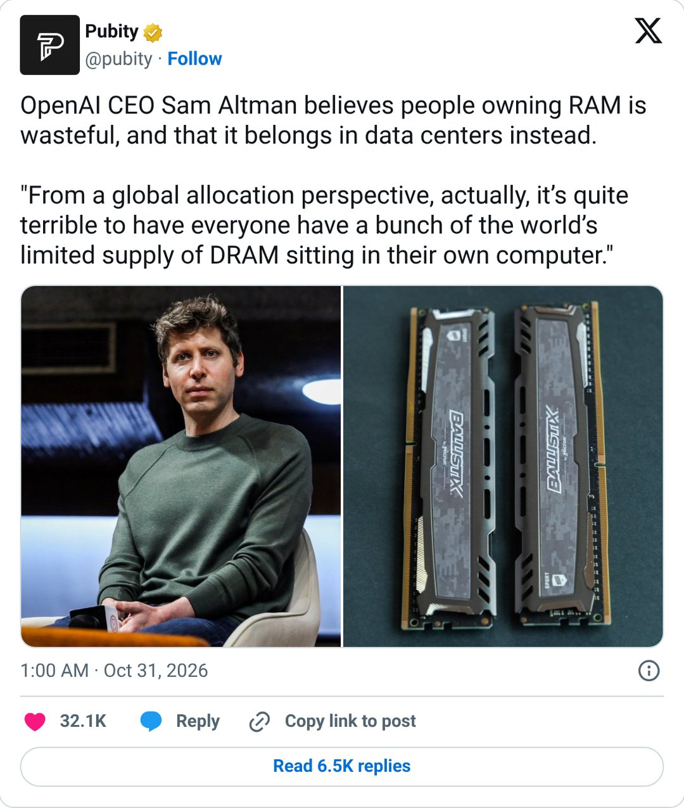
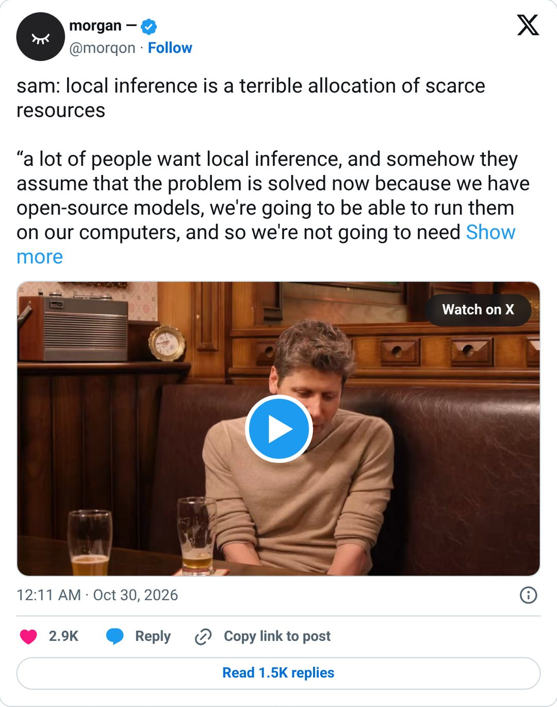
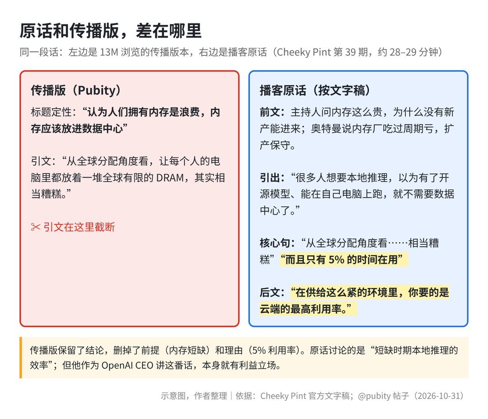
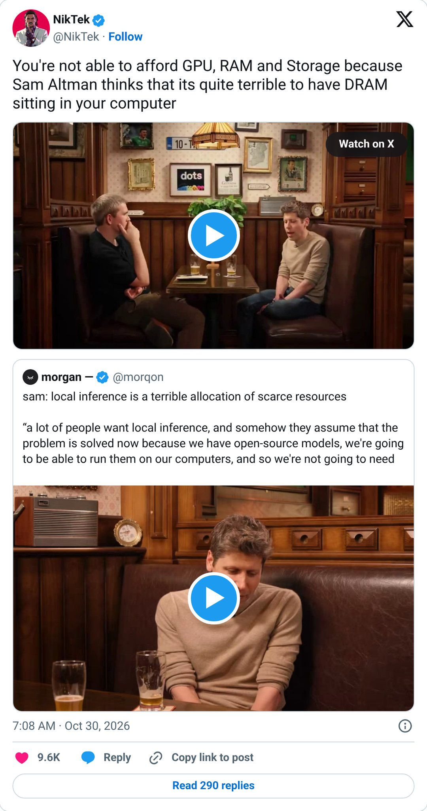
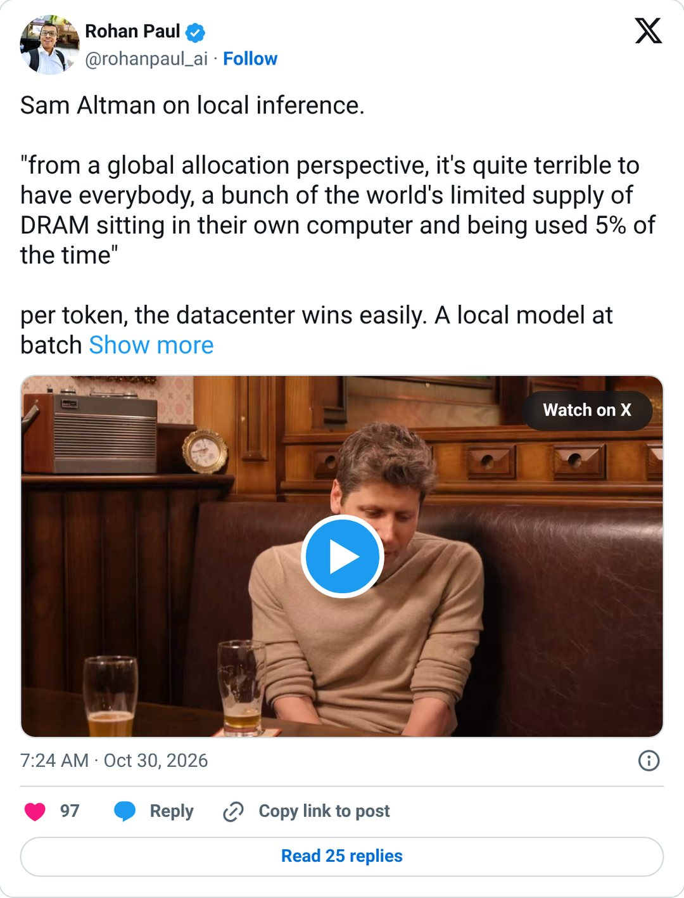
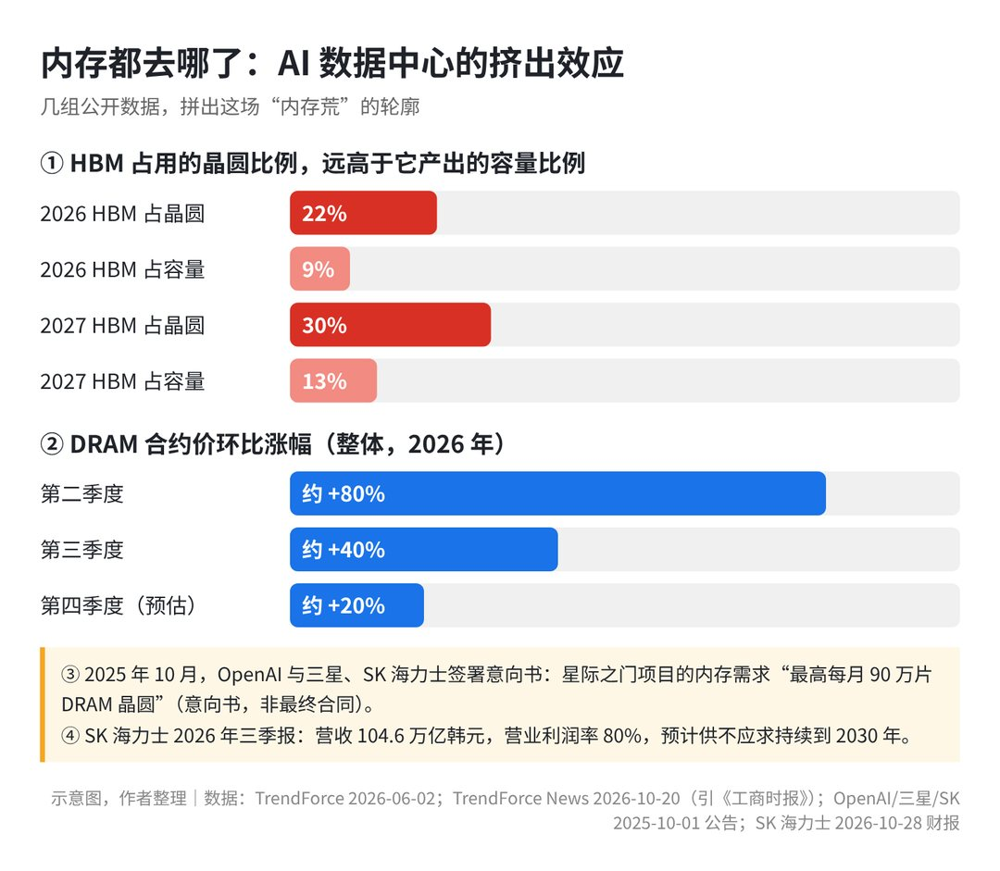
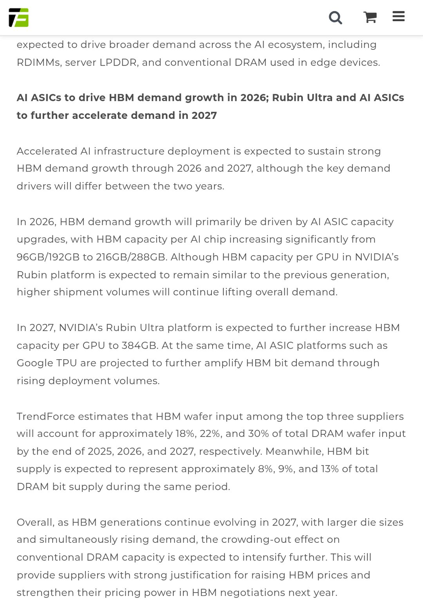
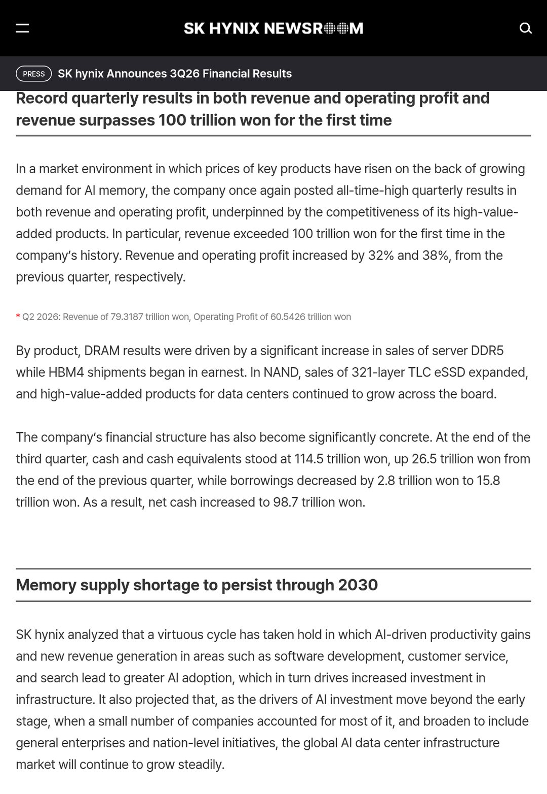

一、争议是什么：一条千万浏览热帖引发的风波
一条千万浏览热帖点着的火
事实台北时间 2026 年 10 月 31 日 01:00，知名传播账号 Pubity 发了一条关于 OpenAI 首席执行官奥特曼的帖子，引来大量争论。
事实据 Pubity 帖子公开页面数据，截至 11 月 1 日，该帖获约 1350 万次浏览（页面显示约 1353 万）、3.26 万个赞、1.15 万次引用和 9263 次书签收藏。

Pubity 在标题里把奥特曼的观点概括得很尖锐：“奥特曼认为人们拥有内存是浪费，内存应该放进数据中心。”
观点在我看来，争论的核心就一句话：全球内存芯片不够用时，把内存装进普通人电脑里，算不算糟糕的资源分配？
为什么一句话能戳中普通人的痛点？
这话一天内刷屏，正撞上普通消费者对硬件涨价的不满。内存合约价已经连涨几个季度，TrendForce 还预估今年四季度 NAND 闪存（固态硬盘里用的存储芯片）合约价环比再涨 15%–20%。
事实据 TrendForce News（集邦咨询新闻）引述《工商时报》数据，2026 年整体 DRAM（动态随机存取内存）合约价在二季度环比涨约 80%，三季度又环比涨约 40%。
观点普通买家本就顶着硬件涨价压力，看到消耗海量内存的 AI 巨头掌门人嫌个人电脑内存用得少，情绪一点就着。不过核对播客官方文字稿会发现，原话和刷屏标题之间隔着好几层剪裁。
二、当事人原话与背景：从视频切片回到播客现场
从一分钟视频切片到刷屏
这句刷屏的话，在传播中经历了两次浓缩。
事实据播客 Cheeky Pint 官方页面信息，源头节目第 39 期于美国时间 2026 年 10 月 29 日发布，全长约 53 分钟。
事实台北时间 10 月 30 日 00:11，社交平台流出一条早期视频帖，截取了奥特曼谈本地推理的那段，截至 11 月 1 日浏览量约 350 万。

该帖正文保留了较完整的英文引述，但开头把奥特曼的观点提炼成：“本地推理是对稀缺资源的糟糕分配。”这句概括出自发帖文本，不在奥特曼原话里。
到台北时间 10 月 31 日 01:00，Pubity 二次转述时删去前半句背景，浓缩成“奥特曼认为人们拥有内存是浪费，内存应该放进数据中心”。
回到播客现场：他们当时到底在聊什么？
事实据 Cheeky Pint 第 39 期官方信息，主持人是支付公司 Stripe 联合创始人 John Collison，对话围绕超级人工智能与算力基础设施展开。
事实据 Cheeky Pint 第 39 期官方文字稿记录，节目 25 分 17 秒进入“算力（Compute）”章节后，John Collison 问：既然现在内存这么贵，为什么没有新供给冲进来？
奥特曼回答称，经济学里“看不见的手”失灵了。他说内存厂过去几十年约投 200 亿美元资本开支，只赚回约 190 亿美元；现在每家一年可能赚约 1000 亿美元自由现金流，但还记得行业低谷，扩产很保守。
需要提醒一句：上述内存厂历史投入、回报及千亿美元自由现金流的数字，只是奥特曼在播客里的口头说法，并非核实过的行业财务统计。
事实据同一段官方文字稿，奥特曼接着谈到 OpenAI 已做了自研芯片、正学习建数据中心，还提到造“自我复制的数据中心”的机器人项目，目标是“做大量非常便宜的算力”。
正是在解释大型数据中心为何不可或缺时，他谈到了“本地推理”。
原话逐句对照：传播版改了哪三处？
事实据 Cheeky Pint 第 39 期官方文字稿，奥特曼说：“很多人想要本地推理（在自己电脑上跑 AI 模型），而且不知怎么就觉得问题已经解决了，因为我们会有开源模型、能在自己电脑上跑，所以不再需要数据中心里那些东西了。”
事实按官方文字稿，他接着说：“但从全球分配的角度看，让每个人的电脑里都放着一堆全球有限的 DRAM 内存、只有 5% 的时间在用，其实相当糟糕（quite terrible）。”
事实他继续道：“如果你要应对这种供给极度受限的环境，你希望在云端实现最高利用率。但很多人的直觉却正好相反。”

比对官方文字稿与 Pubity 传播帖，有3处改动：第一，原话只说“相当糟糕（quite terrible）”和“只有 5% 的时间在用（being used 5% of the time）”，未提“浪费（wasteful）”或“内存应该属于数据中心”。
第二，Pubity 引文截断在“放在自己的电脑里”，删掉了后文的“只有 5% 的时间在用”及“你要在云端实现最高利用率（You want maximum utilization in the cloud）”。
第三，传播帖抹平了讨论前提——他聊的课题是“在个人电脑上跑开源 AI 模型能不能替代数据中心”，原话没有谈到普通人为日常办公或娱乐买内存这件事。
观点刷屏标题确实曲解了他的字面表述，但即便还原全部上下文，他背后的算账逻辑依然值得细究。
三、他的逻辑：为什么他盯着“5% 利用率”不放？
先翻译两个词：什么是“本地推理”和“云端推理”？
先解释“推理（Inference）”：训练 AI 模型像让学生读书，“推理”就是让学成的模型实际干活，比如回答提问、写摘要或翻译文档。
本地推理是把开源 AI 模型下载到自己电脑或手机里，靠设备里的芯片和内存算出答案。在个人电脑上跑较强的模型很占高速内存，因此内存成了焦点。
云端推理是在手机或电脑网页上提问，交由远方大型数据中心的服务器群算好结果，再通过网络传回屏幕。
核心账本：为什么他盯着“利用率”不放？
奥特曼算账的核心指标是利用率（Utilization），即硬件全天处于工作状态的比例。
假设用户为顺畅跑本地 AI 模型买了大容量内存。平时用户要开会、休息、外出，模型多数时间在待命；按奥特曼“只有 5% 的时间在用”来算，这部分内存多在空转。
反过来，把同样规模的内存装进云端数据中心，调度效率就不同了。全球不同时区的用户轮流发起请求，你休息时别人正调用算力，机房内存能接近全天满负荷运转。
稀缺前提下的分配逻辑：好钢要用在刀刃上？
如果全球内存产能充裕、价格低廉，个人电脑多装几根内存条没问题。但奥特曼强调了前提：当前处于供给极度受限的环境。
从全球算力总产出的工程视角看，短期能造出的 DRAM 总量有限，分散装进每天只跑一会儿模型的个人电脑，服务的需求很有限；集中放进云端机房分时共享，就能回答更多提问、摊薄单次硬件成本。
观点单看总产出最大化的工程题，奥特曼“云端集中调度优于单机分散闲置”的逻辑说得通。但市场反弹剧烈，是因为普通人买硬件本就无法简化成机房效率题。
四、不同看法：算力效率与个人控制权的交锋
算总账与讲道理：谁推高了价格？闲置就等于白费吗？
围绕这段话，行业与消费市场有六种代表性看法。一种看法是，把内存紧缺怪到消费者头上颠倒了因果：普通人买不起显卡、内存和硬盘，根源是科技巨头扩建数据中心抢走产能，承受涨价的明明是普通买家。

事实据社交平台公开帖子数据，配文“你买不起显卡、内存和硬盘，是因为奥特曼觉得内存放在你电脑里很糟糕”的吐槽帖，获约 9600 个赞和 39 万次浏览。
观点在半导体供应链里，普通消费者只是被动接受零售价的末端买家，没议价权跟巨头抢产能，把正常买电脑说成与数据中心争资源，情理上难服众。
一种看法是，个人硬件“闲置”不等于“浪费”，拿“只有 5% 的时间在用”审视日常消费品很荒唐。就像私家车每天只上下班开一会儿、厨房只做两三顿饭、楼道灭火器常年不动，难道都要收归集中调度？
事实据社交平台公开帖子数据，写着“我用 64GB 内存跑 Hello World（最简单的入门代码），告诉奥特曼是我干的”的帖子，获约 1.36 万个赞和 15.7 万次浏览。
观点这个类比点破了消费品的核心：个人花钱买硬件，买的就是“我想用的时候它随时待命”的自由，为随时可用保留的冗余本身就有价值。
效率与控制权的取舍：我们买内存到底在买什么？
一种看法是，本地推理的价值在于数据隐私、断网可用、没有提问限额、模型不随时下架或改规则，以及小企业成本可预期。
用云端 AI 处理保密合同、个人财务或敏感资料，数据得上传别人服务器；本地跑模型拔掉网线也能转，数据不离本地硬盘。依赖云端还会受制于平台拒答、限额或旧模型关停下架。
对小企业来说，买大内存电脑是一次性支出；云端按 token（AI 处理文本的最小计费单位）收费，账单随用量浮动，不利于控制长期成本。
事实据 OpenAI 2025 年 8 月发布 gpt-oss 开源模型时的官方介绍，其中 gpt-oss-20b “只需 16GB 内存就能在端侧设备上运行”，适合本地推理。
观点OpenAI 自己也发过面向本地运行的模型，这和如今嫌个人电脑内存闲置的说法放在一起，多少有些张力。
一种看法是，争论底层是“效率”与“个人控制权”的取舍：按每个 token 成本算，大型数据中心胜出；但个人电脑里的本地模型，是唯一没人能远程替你关停下线的部分。

观点工程数学上奥特曼算对了利用率，但在真实市场上忽略了人的需求——人们买大内存，看重的是数据、响应速度和长期价格不必受制于人。
商业立场与原意辩护：听完整段话，该怎么评价他？
一种看法是，评价奥特曼的表态，不能脱离他作为云端 AI 巨头掌门人的商业立场。
事实科技媒体 Tom's Hardware 在报道中指出，奥特曼的观点基于两个未证实假设：一是数据中心扩建永不放缓，二是内存全天跑云端 AI 比日常电脑用途更有价值。
事实科技媒体 PCMag 的报道也点出反差：当奥特曼呼吁算力集中上云时，OpenAI 合作伙伴英伟达和微软，却在向消费者推销主打本地算力的 AI PC（人工智能个人电脑）。
推测从 OpenAI 商业模式推断，其核心收入来自云端订阅与接口调用，越多人认同“本地跑模型效率低下、算力该集中上云”，对它的云端业务越有利。
一种看法是，听完整段播客录音就会明白，他只是讨论芯片紧缺时期的资源分配效率，没说要禁止普通人买内存，也没说要没收个人电脑。
观点这种辩护符合事实，不该顺着断章取义的标题批他；但回到原话，他仍绕开了核心追问——当资源稀缺时，由谁来定义哪一种用途才算“最高价值”？若只拿机房满负荷指标衡量，个人独立性与安全感就会被当成代价。
五、知识与事实边界：五个词看懂内存为什么这么紧
五个词看懂内存生意：DRAM、HBM、晶圆、合约价与长约
- DRAM（动态随机存取内存）：电脑内存条、手机运行内存，负责给运行中的软件临时存数据，断电即清空。
- HBM（高带宽内存）：把多层特制 DRAM 芯片垂直堆叠，装在数据中心 AI 芯片旁，传输数据速度很快。
- 晶圆（Wafer）：造芯片用的圆形硅片底板，像做披萨的饼皮，先做电路再切割成芯片；新建晶圆厂周期长，产能短期内很难快速增加。
- 合约价（Contract Price）：三星、SK 海力士等原厂每季与电脑厂、手机厂、云服务商谈定的大宗批发价，决定几个月后零售涨跌。
- 长约（长期供应协议）：大科技公司为防未来断货，提前一两年甚至更久与芯片厂签约锁定产能。
内存为什么这么紧？看懂晶圆消耗与连涨账单
这轮内存涨价的推手是：AI 数据中心急需的 HBM 正在大量挤占普通内存的晶圆产能。HBM 芯片面积更大、堆叠工艺复杂，造同样容量消耗的晶圆远多于普通电脑内存。

事实据市场研究机构 TrendForce（集邦咨询）2026 年 6 月 2 日报告，前三大内存厂 DRAM 总晶圆投片量中，HBM 占比在 2026 年末将达约 22%，2027 年末升至约 30%。
事实据同一份报告，这约 22%（2026 年末）和约 30%（2027 年末）的晶圆投片量，转化出的实际内存容量（位元供给），在总供给中仅占约 9% 和约 13%。

投入两三成晶圆只换来一成左右容量，形成产能剪刀差，挤压了普通电脑和手机内存空间。加上卖给 AI 机房的芯片利润高，原厂产线自然向数据中心倾斜。
事实据 SK 海力士 2026 年三季报，该公司单季营收达 104.6 万亿韩元（首次突破百万亿韩元），营业利润率达 80%。
事实据该三季报及电话会披露，SK 海力士已与 14 家客户签下长约，覆盖 2027 至 2028 年过半产能。
事实据 TrendForce News 引述《工商时报》数据，整体 DRAM 合约价在 2026 年二季度环比涨约 80%、三季度涨约 40%，四季度预估再涨约 20%（这是整体 DRAM 口径）。
事实同时 TrendForce 在 2026 年 9 月 30 日预估，四季度一般型 DRAM 合约价将环比上涨 10%–15%（这是一般型 DRAM 口径，与上面的整体口径不同）。
划清事实边界：哪些是铁证，哪些是口头说法或待确认？
按可靠程度，信息可分三层：第一层是已核实的硬事实，即上文 TrendForce 晶圆占比与合约价涨幅、SK 海力士营收与利润率、14 家客户长约，均来自公司财报、研究机构报告或其新闻引述。
第二层是口头说法或未成正式合同的意向：奥特曼提的“5% 时间在用”及内存厂投 200 亿美元赚 190 亿、年赚约 1000 亿美元自由现金流，只是播客口头说法，无公开统计出处。
事实其次，据 OpenAI 与三星、SK 于 2025 年 10 月 1 日发布的合作公告，三方签的是意向书（LOI），目标是满足“最高每月 90 万片 DRAM 晶圆”的需求。
意向书只是合作意向，不等于最终采购合同；至于“每月 90 万片晶圆约占全球产能四成”，只是媒体外部估算（待确认）。
观点第三层是常识与待核实传闻：已经卖出的内存条不会被拆回数据中心，真正被争夺的是晶圆厂未来几年的排产计划。
另外，近期传出奥特曼于 10 月 31 日在韩国见三星高管谈内存供应（待确认），此前也有消息称美光退出 Crucial 消费级品牌业务（待确认），在官方完整披露前仅作背景参考。
六、对普通人的影响：买硬件与用 AI 的实在建议
买电脑、手机、显卡和内存条：现在买还是等降价？
事实据 TrendForce 2026 年 9 月 30 日报告提示，受产能转向服务器影响，2027 年个人电脑（PC）DRAM 供给可能下降。
事实据 SK 海力士 2026 年三季报披露的预期，全球内存供不应求预计持续到 2030 年，PC 和手机出货量预计会因内存涨价而下降。

观点上游内存涨价传导到消费端，往往是整机提价或同价位内存配置缩水。结合未来一两年的产能锁死情况，给三类读者购买建议：
- 刚需购机（旧电脑故障、工作或升学急用）：别苦等未来一两个季度大幅降价，建议趁大促或补贴窗口入手，把日常够用的内存一步买到位，免得日后高价单买内存条。
- 手头的电脑、手机和显卡还能顺畅用：建议推迟非必要升级，不必在合约价连涨三季的高位凑热闹。
- 想专门为“本地跑大型开源 AI”高价买超大内存硬件：除非有高频刚需，否则先算算投入产出比，别盲目跟风。
云端 AI 还是本地 AI：普通人怎么选最划算？
观点日常用 AI 建议放弃“非此即彼”的站队，按场景采取“云端为主、本地为辅”的组合策略。
多数普通用户每天只偶尔让 AI 写总结、润色邮件或翻译，专门高价买超大内存电脑跑本地模型不划算。这类公开非敏感任务直接调用云端大模型，推理更强，也能省下硬件溢价。
但若小团队或个人每天高频处理固定格式任务，且对每月浮动的 token 账单敏感，用现有主流配置电脑跑轻量级本地模型仍很实惠。
隐私、断网与长期依赖：留一道自己的后路
当算力和内存向少数云巨头集中时，若把所有工作流和核心资料都绑在单一云平台上，遇到涨价、限额、模型下架或断网就会陷入被动。
观点因此借力云端算力时，个人电脑上至少要守住两条底线：第一，涉及个人财务、商业机密、未公开合同与私人记录的内容，尽量留在本地软件或离线小模型里处理。
第二，定期把核心文档和整理好的知识库备份在本地硬盘，同时备好断网也能打开的基础工具，确保脱离云端时仍保有兜底控制权。
七、我的判断：关于内存价格与技术走向的三个推演
判断一：未来一两年消费级内存难现大跳水，除非 AI 扩建踩刹车
推测第一个判断：在 2027 年底前，普通消费者买的电脑内存与手机存储价格难回前两年低位，入门级数码产品的内存扩容速度也会放缓。
依据一是 TrendForce 数据显示，HBM 占 DRAM 晶圆投片比例将从 2026 年末约 22% 升至 2027 年末约 30%，持续挤压普通内存产能；依据二是 SK 海力士长约已覆盖 2027–2028 年过半产能，且预计短缺延续到 2030 年。
推翻条件：若未来一年科技巨头的 AI 数据中心资本开支因商业化受阻大幅削减，或三大内存厂提前建成大批面向消费级市场的新晶圆产线，消费级内存价格才会提前大幅回落。
判断二：本地推理不会消失，它会与云端形成长期互补分工
观点第二个判断：本地推理不会因云端巨头看衰而退场，未来几年它会与云端形成互补分工——重度复杂的通用任务集中在云端，高频、离线与隐私敏感任务留在终端。
依据在于：个人与小微企业对隐私、离线及固定成本的需求，云端按量计费难以满足；另外据 PCMag 报道，英伟达、微软仍在推广主打本地 AI 的电脑，硬件厂商也有动力让本地算力继续存在。
推翻条件：除非未来云端服务能在物理层面消除隐私外泄风险、承诺长期不限额、不下架且价格足够低，或本地小模型技术停滞不前，这种云与本地并存的格局才会改写。
判断三：围绕硬件控制权的争论才刚刚开始
观点第三个判断：在芯片与内存持续紧缺的周期里，科技巨头以“全局分配效率”推动硬件与算力集中上云的声音还会反复出现，消费者围绕个人硬件控制权的反弹也会更强。
依据是：算力紧缺时代，云服务商倾向把稀缺硬件留在高利润、高周转的数据中心按次出租，普通用户则希望通过一次性买断硬件保住使用自由，双方诉求存在长期张力。
推翻条件：若未来上游晶圆产能翻倍扩张、内存变回廉价充足的普通零件，这场围绕“谁更配用内存”的分配争论就会自然平息。
聊完这场引发 1350 万围观的内存风波，我也想听听你的看法：面对这一轮因 AI 抢占产能带来的电脑和手机涨价，你最近有推迟买电脑、换手机或加内存条的打算吗？在日常使用 AI 时，你更看重云端的高效省心，还是更在意本地电脑随时可控的安全感？欢迎在留言区聊聊你的真实选择。
附录：10 条相关热门帖子与报道（数据截至 2026-11-01，台北时间）
- Pubity 原帖（约 1353 万浏览，3.26 万赞，1.15 万次引用）：https://x.com/pubity/status/2116213541304746415 。我的看法：传播最广的版本，把一段带前提的分析压成了一句立场。
- 最早带视频的传播帖（约 350 万浏览）：https://x.com/morqon/status/2115838856524120128 。我的看法：引文比 Pubity 完整，但首句概括同样是二次加工，想看原话请回到文字稿。
- NikTek（约 9600 赞，约 39 万浏览）：https://x.com/NikTek/status/2115943817891516918 。我的看法：把显卡、内存、硬盘涨价的不满集中到一个人身上，反映的是消费者真实的价格痛感。
- _jaydeepkarale（约 1.36 万赞，约 15.7 万浏览）：https://x.com/_jaydeepkarale/status/2116484445939405137 。我的看法：玩梗的背后是一个朴素立场，自己买的硬件怎么用，是自己的事。
- Culture Crave（约 3900 赞，约 52 万浏览）：https://x.com/CultureCrave/status/2116265917307097283 。我的看法：话题出圈到泛娱乐受众，语境在每一次转述里继续流失。
- Hesamation（约 1500 赞，约 28 万浏览）：https://x.com/Hesamation/status/2115846207167713433 。我的看法：它点出了因果顺序问题，承受高价的是消费者，挤占产能的主要是数据中心采购。
- Rohan Paul（约 100 赞，约 1.4 万浏览）：https://x.com/rohanpaul_ai/status/2115947866304937997 。我的看法：按每 token 算云端更省，这点我认同；但本地是唯一不会被别人下线的部分，这是效率和控制权的取舍。
- Péter Szilágyi（约 40 赞，约 3000 浏览）：https://x.com/peter_szilagyi/status/2116132555074453619 。我的看法：把这段话和一次云端模型拒答放在一起，提醒依赖云端也意味着把“能不能用”交给别人。
- Techmeme 转 Tom's Hardware（约 4200 浏览）：https://x.com/Techmeme/status/2116412850361299054 。我的看法：媒体拆出了观点背后的两个假设，比单纯的情绪反弹更有信息量。
- Feroce Research（约 780 赞，约 2.8 万浏览）：https://x.com/FeroceResearch/status/2115229836771779046 。我的看法：从投资角度看，美光和 SK 海力士都把短缺看到 2030 年前后，这场内存荒是延续多年的结构问题，一两个季度内难以缓解（该帖为二手解读，以公司财报为准）。
补充报道：PCMag https://au.pcmag.com/ai/120692/sam-altman-suggests-running-ai-locally-is-a-waste-of-memory ；Capital&Compute《Half right》https://capitalandcompute.net/blog/is-local-ai-a-waste-of-dram/ （其中每 token 成本为作者自建模型估算）。
参考来源 - Cheeky Pint 第 39 期（官方页面）：https://cheekypint.transistor.fm/39 - Cheeky Pint 第 39 期文字稿：https://cheekypint.transistor.fm/39/transcript - YouTube 视频：https://www.youtube.com/watch?v=iMsUcCYNKqY - Pubity 原帖：https://x.com/pubity/status/2116213541304746415 - 带视频的早期传播帖：https://x.com/morqon/status/2115838856524120128 - Tom's Hardware：https://www.tomshardware.com/tech-industry/data-centers/openai-ceo-says-its-quite-terrible-for-your-pc-to-have-ram-sam-altman-says-data-centers-offer-better-utilization - PCMag：https://au.pcmag.com/ai/120692/sam-altman-suggests-running-ai-locally-is-a-waste-of-memory - TrendForce（2026-06-02，HBM 晶圆占比）：https://www.trendforce.com/presscenter/news/20260602-13074.html - TrendForce（2026-09-30，四季度价格预估）：https://www.trendforce.com/presscenter/news/20260930-13258.html - SK 海力士 2026 年三季报：https://news.skhynix.com/en/q3-2026-business-results/ - OpenAI gpt-oss 发布介绍（2025-08）：https://openai.com/index/introducing-gpt-oss/ - OpenAI 与三星、SK 合作公告（2025-10-01）：https://openai.com/index/samsung-and-sk-join-stargate/